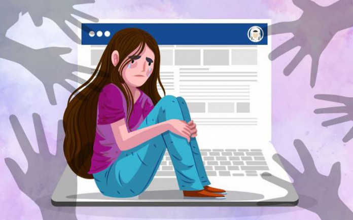

Ansiedad por la tecnologia
La adolescencia es una etapa llena de cambios y desafíos que pueden generar altos niveles de ansiedad. Los adolescentes enfrentan presiones académicas, sociales y familiares que pueden afectar su bienestar emocional.
Identificar y entender los síntomas de la ansiedad en esta etapa es crucial para proporcionar el apoyo necesario. En este blog, exploraremos las causas comunes de la ansiedad en adolescentes y ofreceremos estrategias prácticas para ayudarles a manejar y reducir su ansiedad, fomentando una mejor salud mental y emocional.
La ansiedad por la tecnología, también conocida como tecnoestrés, es un fenómeno cada vez más común en nuestra sociedad moderna, donde la tecnología desempeña un papel central en la vida diaria. Esta forma de ansiedad surge de la dependencia y el uso excesivo de dispositivos digitales, como teléfonos inteligentes, computadoras y redes sociales. Los síntomas pueden incluir una sensación de abrumo por la cantidad de información disponible, la necesidad constante de estar conectado, y la presión de responder rápidamente a mensajes y notificaciones.

Además, la comparación social y la exposición constante a las vidas aparentemente perfectas de los demás en las redes sociales pueden alimentar sentimientos de insuficiencia y ansiedad. El tecnoestrés también puede interferir con el sueño, reducir la capacidad de concentración y aumentar el estrés general.
Para manejar la ansiedad por la tecnología, es esencial establecer límites claros en el uso de dispositivos digitales, practicar la desconexión periódica y fomentar actividades fuera de línea que promuevan el bienestar mental y físico. Desarrollar una relación más saludable con la tecnología puede ayudar a reducir la ansiedad y mejorar la calidad de vida en general.
Causas de la ansiedad por la tecnología
- Dependencia y Adicción:
- Comparación Social:
- Ciberacoso y Comentarios Negativos:
- Adicción a los Juegos y Redes Sociales:
Tiene diversas causas fundamentales. Estas incluyen el acceso constante a dispositivos y conexiones que dificultan desconectarse, el temor a perderse algo importante en redes sociales (FOMO), la búsqueda continua de validación y comparaciones sociales, la sobrecarga de información que abruma, la creación de expectativas irreales a través de imágenes idealizadas en redes, el estrés generado por la multitarea digital, la paradoja de estar más conectado pero menos socialmente, el impacto negativo en la salud mental por un uso excesivo y la ansiedad asociada a una dependencia emocional de la tecnología. Gestionar el uso de la tecnología de manera equilibrada es crucial para prevenir estos efectos adversos en la salud mental y el bienestar general.
Se manifiesta a través de la idealización de vidas ajenas en redes sociales, la presión por mantener un rendimiento constante, el miedo a perderse eventos importantes (FOMO), la comparación constante de logros y éxito, el impacto negativo en la autoimagen y la autoestima, y la sensación de falta de control sobre nuestras vidas. Estos factores pueden generar ansiedad social al distorsionar la percepción de uno mismo en relación con los demás, subrayando la importancia de gestionar el uso de la tecnología de manera equilibrada y saludable.
El ciberacoso, que incluye intimidación y difamación en plataformas digitales, puede hacer que las víctimas se sientan inseguras y temerosas de interacciones en línea. Además, los comentarios negativos y críticas frecuentes pueden afectar negativamente la autoestima y generar ansiedad social al hacer que las personas se sientan constantemente evaluadas y juzgadas. Estos factores, combinados con la sobreexposición a información y la preocupación por la privacidad, contribuyen a niveles elevados de ansiedad entre algunos usuarios de tecnología.
Estos incluyen la gratificación inmediata y el refuerzo positivo que ofrecen las plataformas, la comparación constante con otros en redes sociales, la dificultad para establecer límites claros de uso, el impacto en la salud mental debido a la sobreestimulación y la falta de desconexión, así como las expectativas irreales generadas por representaciones idealizadas en línea.
Estos elementos pueden contribuir a sentimientos de ansiedad y pérdida de control sobre el uso de la tecnología, afectando el bienestar emocional y social de las personas.
Efectos de la ansiedad por la tecnología
- Estrés Crónico:
- Trastornos del Sueño:
- Aislamiento Social:
- Disminución de la Productividad:
El estrés crónico puede surgir de la presión constante para estar conectado, gestionar una gran cantidad de información y cumplir con las expectativas de respuesta rápida en entornos digitales. Esto puede agotar los recursos emocionales y físicos, afectando negativamente la salud general y el bienestar.
Los trastornos del sueño se refieren a cualquier alteración en los patrones normales de sueño, que pueden incluir dificultades para conciliar el sueño, interrupciones frecuentes durante la noche o una calidad de sueño insatisfactoria. La ansiedad por la tecnología puede contribuir a estos trastornos al inducir una estimulación mental y emocional excesiva antes de dormir, especialmente a través de la exposición a la luz azul de las pantallas y la constante actividad mental relacionada con la revisión de notificaciones y mensajes.
El aislamiento social se refiere a la falta de interacción significativa y apoyo emocional de otras personas. Aunque la tecnología puede facilitar la conexión virtual, también puede reducir la cantidad y calidad de las interacciones cara a cara, lo que puede llevar a sentimientos de soledad y desconexión. La dependencia de la comunicación digital en lugar de las interacciones personales puede limitar las oportunidades de formar relaciones profundas y satisfactorias.
La disminución de la productividad se refiere a una reducción en la capacidad para realizar tareas de manera efectiva y eficiente. En el contexto de la tecnología, esto puede ser causado por la constante interrupción debido a notificaciones, correos electrónicos y la multitarea, que dispersan la atención y dificultan el enfoque en tareas individuales. La dificultad para concentrarse puede llevar a una menor calidad en el trabajo y una mayor demora en la finalización de proyectos.
Recursos
La ansiedad relacionada con la tecnología es algo cada vez más común, especialmente en una era donde estamos constantemente conectados. A continuación se ofrecen algunos consejos que pueden ayudarle a controlar y reducir la ansiedad:
Decide cuánto tiempo al día vas a pasar en las redes sociales o usando dispositivos electrónicos y cúmplelo. Las aplicaciones de control de tiempo pueden ser útiles para ayudarte a monitorear y limitar tu uso.
Las notificaciones constantes pueden ser una fuente importante de estrés. Considera desactivar las notificaciones no esenciales o configurar modos "no molestar" durante momentos clave del día, como antes de dormir.
Establece momentos específicos para revisar correos electrónicos o redes sociales. Tener una rutina te ayuda a evitar la tentación de revisar constantemente.
La meditación y las prácticas de mindfulness pueden ayudarte a estar más presente y a reducir la ansiedad general. Aplicaciones como Headspace o Calm ofrecen guías para empezar.
Programa descansos regulares en los que te desconectes completamente de la tecnología. Utiliza este tiempo para hacer actividades que disfrutes, como leer un libro o dar un paseo.
La actividad física es una excelente manera de reducir el estrés y mejorar tu bienestar general. Intenta incorporar algún tipo de ejercicio en tu rutina diaria.
El uso excesivo de la tecnología antes de dormir puede afectar la calidad del sueño. Intenta evitar las pantallas al menos una hora antes de acostarte y establece un ambiente relajante para dormir.
Si sientes que la ansiedad es abrumadora o no puedes manejarla por ti mismo, considera hablar con un profesional de la salud mental. La terapia puede ofrecerte estrategias adicionales y apoyo.
Dedica tiempo a conectar con amigos y familiares en persona. Las interacciones cara a cara pueden ser más satisfactorias y reducir la sensación de aislamiento que a veces puede surgir del uso excesivo de la tecnología.
Encuentra actividades que te apasionen y que no estén relacionadas con la tecnología. Ya sea pintar, cocinar, hacer jardinería, o cualquier otra cosa, tener pasatiempos variados puede ayudarte a desconectar.